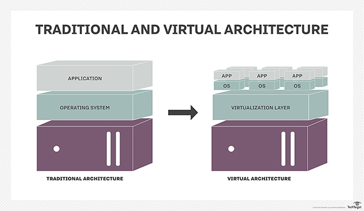
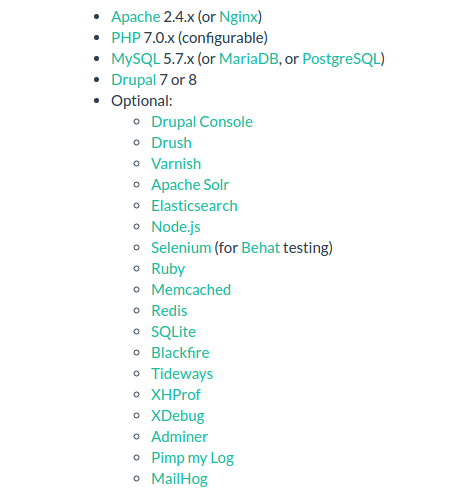
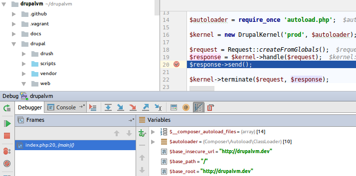

Suresh Kumara
- Senior Drupal Developer
- Open source Enthusiast.
- Worked on Magento, Codeigniter.
- Working on Drupal 8 Group, Commerce
Sandeep Reddy
- Technical Architect
- Worked on MVC php framework.
- Transitioned in to Drupal in 12 months.
- Maintainer of Views Tools Module
- A frequent traveller
Overview
- Virtualization
- What is Vagrant And Its Advantages.
- What is Ansible?
- What is Drupal VM?
- People behind Drupal VM.
- Advantages of Drupal VM In Drupal Development.
- Installing Drupal VM and Drupal VM Config File.
- Demo
- Debugging Drupal instance installed in Drupal VM using PhpStorm (IDE).
What is virtualization
- Creation of a virtual rather than actual version of something

Jeff Geerling (@geerlingguy)
- Maintainer of Drupal VM.
- He is involved in many open source development communities like Drupal and Ansible.
- He is also an author of Ansible for DevOps.
What is Vagrant
- A command line utility installed on host machine for managing the lifecycle of guest virtual machines.
- Vagrant acts as a wrapper around a provider(ex VirtualBox).
- Used to build complete development environments.
- Key terms
Advantages
- Supports a range of virtualization providers and provisioning frameworks for configuration management.
- handling virtual machine is simple.
What is Ansible and How it works?
- Ansible is a configuration management and
provisioning tool runs against servers.
- It ensures each machine is working with identical environment.
What is Drupal VM?
- Drupal VM is a preconfigured virtual machine.
- Drupal VM is introduced for local drupal development .
- New method of developing drupal projects.
- Drupal VM is built on the top of Vagrant and Ansible.
Advantages
- Simplify and standardize yours and your team’s workflow.
- VM config is portable, version-controllable.
- The VM allows multiple sites per server.
- It uses a pre-provisioned base box.
- It is much faster to provision.
- Easy to emulate different operating system.
- Simple and readable YAML configurations.
Configuring and Installing Drupal VM.
- Drupal VM can be downloaded from https://www.drupalvm.com/
- Drupal VM comes with a default.config.yml which can be overwritten by config.yml, local.config.yml.
- vagrant up will do the magic.
- vagrant provision will reload all the changed config into the VM.
- vagrant ssh will help us loggin into the VM.
Demo

Optional packages available in Drupal VM

Debugging Drupal instance installed in Drupal VM using PhpStorm (IDE).
